第17章 棒线计数：高点和低点1、2、3和4形态以及ABC调整¶
第 17 章 棒线计数：高点和低点 1、2、3 和 4 形态以及ABC调整
所有市场都是分形的。分形是一个数学概念，也就是说市场的每一个片段都与每一个更低或更高时间框架图表中形态基本相同。如果去掉图表上的时间和价格标签，通常你不能说出它到底是 3 分钟图、5 分钟图、60 分钟图、还是月线图。你能够可靠估计一张图表的时间框架的唯一时间是当普通棒只有 1 到 3 个跳动高时，因为那张图表上几乎全部是十字星，那种情况仅发生于小时间框架或成交量极低的市场中，你不应交易那些图表。
由于每张图表上的每一波运动都倾向于包含两条腿，每一次调整也倾向于包含两条腿，每一次调整的调整也倾向于包含两条腿，所以交易者只要明白这种倾向，就能发现大量机会。
在多头趋势或交易区间中，回撤已经结束的可靠信号是当前棒线的高点至少比前一棒线的高点高出 1 个跳动。这引出一个非常有用的概念，即计算这种情况出现的次数，称为“棒线计数”。在多头趋势或交易区间的横盘或下跌运动中，其高点高于前一棒线高点的第一条棒线便是高点 1，它标志着横盘或下跌运动的第一条腿形的结束，尽管这条腿形可能只是更大回撤中的一条小型腿。如果市场没有转变进入多头波段，而是继续横盘整理或下跌，那么就把下一次其高点高于前一棒线高点的棒线标记为高点 2，标志着第二条腿形的结束。在高点 1和高点 2 之间，至少需要一次微小的趋势线突破，以表明趋势交易者们仍然活跃。如果没有这种突破，那么仍然不要买进，因为高点 1 和高点 2 很可能只是下降通道的一部分，那条下降通道正在形成复杂的第一条下跌腿。
在强上升波段中，高点 2 入场可能比高点 1 入场高，在强下降波段中，低点 2 入场可能比低点 1 入场低。顺便提一句，多头趋势中的高点 2 和空头趋势中的低点 2 常常被称为 ABC调整，第一条腿是 A，方向改变形成高点 1 或低点 1 入场的是 B，回撤的最后一条腿是 C。从C 开始的突破是多头 ABC 调整中的高点 2 入场棒，或者是空头 ABC 调整中的低点 2 入场棒。
多头趋势中的高点 2 与交易区间中的高点 2，空头趋势中的低点与交易区间中的低点 2之间，存在重要区别，举例说明，当多头趋势中出现一个高点 2 架构时，它通常位于或高于均线，趋势强度足以让你在当天高点附近买进。你是在一轮趋势中的一个延续形态买进，因此可以在趋势顶部附近买进。然而，当你在交易区间中的高点 2 买进时，你通常会准备在反转买进，那个架构低于均线，靠近区间底部。如果你认为市场处于交易区间中，那么在均线上方、靠近交易区间高点的高点 2 买进是比较冒险的。实际上，由于这种交易很可能失败，所以你反而应该考虑使用限价单在高点 2 信号棒的高点或其上方做空。如果高点 2 很可能失败，那么它为什么还会触发呢？那是因为空方正打算在棒线上方做空，较少人会在略低于棒线高点处做空。他们设定限价单在前一棒高点及其上方做空。由于愿意在棒线高点下方做空的空头相对缺乏，所以多头没有遇到对手，能够推动市场超越前一棒高点，希望大量多头将以买进止损单入场。棒线高点的作用就像是一个磁力位，超越棒线的上推是一个小型买进真空。多头发现有巨大数量的空头在那里等着做空。结果是那个高点 2 触发，但市场立即向下反转。那些在前几个跳动买进的多头，很快看到超越前一棒高点的反弹非常乏力。因为市场走势并非他们预料的那样，所以他们离场，至少在几棒内不准备两次买进。他们对多头头寸的抛售加剧了下跌。反过来对于交易区间中的低点 2 也是正确的。你只应准备在均线上方和靠近交易区间顶部的低点 2 卖出，因为你正在交易的是一个反转，而不是一个延续形态。你正在一条上涨腿的终点做空，所以正在与一段小型趋势相反的方向上交易。如果一个形态形成于交易区间底部附近，你认为市场现在处于交易区间内，而不是空头趋势内，那么最好是在低点 2 信号棒（的低点）或其下方买进，预期低点 2 失败，形成一种双重底。当市场看起来在做趋势运动，而你认为市场已经进入交易区间时，这些预期的失败通常会发生。
多头趋势中的高点 1 和空头趋势中的低点 1 可能拥有不一样的风险/回报，具体要取决于它们所处的趋势。举例说明，如果市场正在彻底，形成一个失败的低点 1，那么在那一棒上方买进就是选择新多头趋势的第一个高点 1 入场。成功率可能只有 50－50，但是风险较小，潜在回报较大。你只有很小的机会赚到较大的利润。在新的多头趋势中，初始上涨尖峰之后的高点 1 多头交易，很可能成为一笔成功的交易，至少是一笔成功的刮头皮交易。风险较小，潜在回报和胜率都较高。不过，如果市场正在形成它的第三个连续的高点 1 架构，那么形成波段的几率就非常小，交易者们不应刮头皮。这就意味着风险和潜在回报都很小，胜率低于第一个高点 1。
P143
有些多头回撤可能进一步增长，形成高点 3 和高点 4。当高点 4 形成时，它有时是从高点 2 开始的，而这个高点 2 未能走得非常远。（译注：不明白）相反地，接下来是一个空头突破和又一波两条腿下跌和一个二次高点2，整个运动只是更高时间框架中的一个高点2。在其他时间里，高点 4 是一个小型尖峰和通道空头趋势，其中第一次或第二次下推是一个空头尖峰，接下来的下推是在空头通道中。如果高点 4 未能使趋势恢复，市场跌破其低点，那么市场很可能不再形成多头趋势中的回撤，而是在形成一个空头波段。在下单前等待更多的价格行为展开。
当空头趋势或横盘市场正在横盘或向上调整时，低点低于前一棒的棒线是低点 1，作为调整运动中第一条腿形的结束，这种调整可能短到只有 1 棒。随后出现的被称为低点 2、低点 3 和低点 4 入场。如果低点 4 失败（在低点 4 做空被触发后，出现一条高于低点 4 信号棒高点的棒线），价格行为表明空方已经失去对市场的控制权，市场要么将变为双向的，多方和空方交替掌握控制权，要么多方将取得控制权。无论如何，空方最好能够以强动能突破一条多头趋势线，表明自己已经取得控制权。
如果市场处于一轮明确的多头趋势内，那么不要寻找低点 1 或低点 2 做空架构，因为那些架构只存在于空头趋势和交易区间内。如果市场处于一轮明确的空头趋势内，那么不要寻找高点 1 或高点 2 做多架构，因为那些架构只存在于多头趋势和交易区间内。实际上，如果市场处于空头趋势内，你常常可以准备在前一棒高点上方做空，因为在空头趋势中的高点 1买进是一种低胜率交易。那就意味着如果只有 40%的机会做一笔成功的多头交易，那么就有大约 60%的机会在击中获利了结限价单前击中保护性止损。如果你正在 5 分钟电子迷你图表上刮头皮，那么就有 60%的机会市场会在击中信号棒上方 5 个跳动的限价单前下跌并击中两点的止损。因此，如果有 60%的机会市场会在上涨 5 个跳动前下跌两点，那么这是一个非常棒的做空架构。类似地，你可以准备在强空头趋势或空头通道中的任意一棒的高点上方卖出，可以在多头趋势中的低点1买进，在多头趋势或多头通道中的任意前一棒的低点下方买进。
当你计算这些回撤时，你常常会看到市场继续调整，而不是反转，在那种情况下，你必须改变自己的观点。如果你认为市场处于交易区间内，只有一个很强的新高，然后看到一个低点 2 超越了原来高点（一个卖出架构），但是市场没有下跌，而是继续上涨，那么你应该开始寻找高点 1 和高点 2 买进入场。很可能是多头的力量足以令你只做多。你应该推迟寻找低点 1 和低点 2 做空架构，直到空方展现出足够的力量，很可能制造一波可交易的下跌运动（比如多头趋势线突破之后出现一个对波段高点的失败测试）。
注意在交易区间内，虽然高点2是看涨的，低点2是看跌的，但是在10棒左右的时间里，常常会看到高点 1、高点 2、低点 1 和低点 2 全部出现。由于市场是横向的，多方和空方控制价格行为的时间都很短，所以每一方都尽力争夺控制权，尽力维护自己的利益，于是形成多头形态和空头形态。在交易区间内，很容易看到大量的高点和低点 1 和 2 形态，所以重要的是不要过度交易。当市场基本横盘，棒线之间存在大量重叠，区间不是非常强的趋势中的一个小型旗形时，大部分交易者应该在一旁观望，不应做任何交易。为什么呢？如果你在寻找高点 2 或低点 2，那么你是准备在紧凑交易区间的顶部或底部使用止损单入场，你的操作刚好与机构的操作相反。在紧凑的交易区间内，当市场超越前一棒的高点时，他们正在把自己的多头获利了结，或者正在做空，所以你不希望买进。你的工作是跟随他们的操作，不是忽视他们的操作，自欺欺人地认为你拥有某种神奇的架构，只要你不停交易，就能够赚大钱。在非常强劲的趋势中，紧凑的交易区间可能形成小型旗形，当它们形成小型旗形时，使用止损单在区间的突破入场是合理的。举例说明，如果有一个强劲的四棒空头尖峰，而且在市场横盘运动 10 棒的过程中没有高潮或强势反转，那么使用止损单在空头趋势棒下方做空就是合理的。但是，如果那一天是一个交易区间日，且紧凑交易区间位于一天中中间的三分之一时段，那么大部分交易者们永远不应根据棒线计数交易。
当市场处于交易区间内时，它常常会一再反转方向，所以如果你选择在每个高点 1、2、3和4做多，也在每个低点1、2 、3 和 4 做空，那么一个小时下来，你就会把上周所赚的钱全部赔掉。在关于紧凑交易区间的第 22 章，我将对此进行更细致地讨论。不存在神奇的架构，每个架构都有一个环境，在那个环境中，交易数学给它一个优势，而在其他环境中它将会亏损。根据棒线计数交易，需要市场拥有波段。如果市场处于紧凑的交易区间内，不要交易，除非你是一位老手，能够非常舒适地在前一棒高点上方做空，而不是使用止损单买进，能够在前一棒低点下方买进，而不是使用止损单做空。
这种计数方法有多个变种，但目的都是帮助我们捕捉两条腿调整。举例说明，在强多头趋势中，可能形成一波两条腿回撤，该回撤只包含一个高点 1，但功能上是一波两条腿回撤。你可以在 5 分钟图上根据外观推断出它来，也可以观察较小时间框架图表来确认它，但通常没有必要。在你面前的图表上，无论你把它叫做高点 1、高点 2 变种、还是更小时间框架高点 2，都没有关系，只要你明白市场正在做什么就可以。如果出现一个空头收盘（或两个），那么这可能代表着第一条下跌腿，尽管下一棒没有向上延伸超越空头棒的高点。如果那下一棒拥有一个多头收盘，但它的高点仍然低于趋势高点，那么它就成为第一条下跌腿的终点，如果下一棒左右也是一条空头趋势棒的话。如果下一棒延伸到它的低点下方，那么就在下几棒之内寻找向上延伸超越它的前一棒高点的这样一棒，两条腿下跌结束。把每一棒都看作一条潜在的信号棒，在它的高点上方 1 个跳动处设定一张买进止损单。一旦执行，你现在就得到一个高点2的变种。严格来讲，这条入场棒只是一个高点1，但把它当作高点2。回撤起点处的那条空头棒之后是一条多头棒。在较小时间框架上，这几乎可以肯定是一条小型下跌腿，然后是一条变为更低高点的上涨腿，最后是另一波下推，其中高点2在第二条腿结束。
P144
回撤常常会增长并演变为更大的回撤。举例说明，如果有一轮多头趋势，一个高点 1 做多入场未能到达一个新的高点，而是形成一个更低的高点和另一条下跌腿，那么交易者们就会寻找高点 2 架构买进。如果高点 2 触发，但是在反弹幅度不是太大的情况下，市场再次向下反转至高点2信号棒的低点下方，那么交易者们会准备在高点3（楔形或三角形）或高点4回撤买进。每当市场强势向下突破高点 2 或楔形（高点 3）买进信号棒时，市场通常至少会再形成两次下推。如果对高点 2 信号棒的向下突破不强，整波下跌运动拥有一个楔形外形，并且从一条趋势通道线处向上反转，那么高点 3 就是正在形成一个楔形多头旗形，常常是一个可靠的买进架构。记住，这是多头趋势中的一个回撤，不是空头趋势中的一个反转尝试。在空头趋势中，交易者们在准备买进前需要看到明确的看涨力量，将在第三本书中关于反转的部分讨论。如果对高点 2 买进信号棒的向下突破，在二次下推后向上反转，第四次下推形成类似通道的走势，而且看起来不是特别强，那么它就是一个高点 4 买进架构。有些高点 4买进架构就是较高时间框架上的高点 2 买进架构，更高时间框架中的两条腿每一条都被细分为两条较小的腿。如果对失败的低点 2 的向下突破拥有很强的动能，而且从下跌顶部开始的整个回撤处于一条相对紧凑的通道内，那么在高点 3 买进是风险较高的。相反地，交易者们应该等待，看是否会向上突破空头通道，然后形成突破回撤。每当交易者怀疑下降通道可能太强，不能在高点 3 或高点 4 信号棒上方买进时，他应该把该架构看作其他类型的通道突破，这一点我们在第一本书中讨论过。准备买进前，等等看多头突破有多强。如果突破很强，那么交易者们可以准备在回撤买进。如果突破非常强，形成一第多头趋势棒，而且没有回撤（那种情况可能发生，但不常见），那么市场可能已经变为总在场内多头，交易者们可以以任意理由买进，包含在任意强多头趋势棒的收盘买进。由于止损位于尖峰的底部下方，距离可能比较远，所以头寸规模应该小一些。相反地，如果市场跌破棒 4 信号棒低点，那么市场很可能是在空头趋势中，交易者们应该开始准备在反转卖出，而不是继续准备买进。
反过来在空头反弹中也是正确的。如果低点 2 做空架构失败，市场继续上涨，那么就要观察从失败的低点 2 开始的上涨运动的动能。如果动能不是太强，市场是在一条通道内，特别地，如果市场形成一个楔形外观，那么就准备在低点 3 做空，那可能是一个楔形空头旗形。如果上行动能非常强，比如从失败的低点 2 开始形成一个两棒或三棒强多头上涨尖峰，那么预期至少再形成两条上涨腿，不要在低点 3做空。仅当整个画面支撑看跌时才在低点4做空，如果你认为市场现在已经转变为多头趋势，那么不要做空。
正如在第三本书中关于反转的章节所要讨论的，当交易者们正在寻找向下反转时，他们常常会寻找高点 1、高点 2 或三角形（高点 3）形态，他们预期那些形态失败，成为多头腿的最终旗形，然后在买进信号棒上方做空。由于突破是对高点的测试，所以市场形成一个双重顶（突破可能形成一个更低高点或更高高点，但由于它是第二次上推，而且市场正在向下反转，所以它是一种双重顶，将在第三本书中讨论）。当有人在高点 2 买进信号棒上方做空时，他正在预期市场将下跌进入交易区间或新的空头趋势。由于双重顶是两次上推，交易者们预期它是在交易区间或新的空头波段的顶部，所以也是一个低点 2 卖出架构（在形成双重顶的那一棒的低点下方卖出）。几乎每一次向下反转都是从某种形式的双重顶开始的。如果顶部只是出现在交易区间中的一条小型上涨腿之后，那么双重顶常常只会包含几棒，成为一个微型双重顶。大部分底部的情况是相同的。它们是从失败的低点 1 或低点 2 或三角形突破开始的，它们将形成双重底和向上反转的最终旗形。由于交易者正预期出现一波上涨运动进入交易区间或新的多头趋势，所以双重底也是一个高点 2 买进架构，入场在最后一次向双重底下推的那一棒的高点上方1个跳动处。
高点 3 和低点 3 形态应该像楔形（或传统的三角形，如果该形态基本水平的话）一样交易，因为作用是相同的。然而，为了保持术语的一致性，当它们作为反转形成时，最好把它们叫做楔形，因为根据定义，高点 3 是多头趋势或交易区间中一个回撤（楔形多头旗形），低点 3 是空头趋势或交易作曲家中的一个楔形空头旗形。举例说明，如果有一轮多头趋势或一个交易区间，那么高点 3 意味着出现三条下跌腿，那就在信号棒上方形成一个买进信号。如果有一轮空头趋势，那么你正在寻找低点 1、2、3和4架构，而不是高点1、2、3和4形态。如果空头趋势中形成一个清晰的楔形底，那么你应该准备在反转买进；但是，因为是在空头趋势中，所以你应该把它叫做楔形底，而不是高点 3。类似地，如果有一轮空头趋势或一个交易区间，那么低点 3 意味着出现了三次上推，你应该像楔形顶一样交易。如果有一轮多头趋势，那么你应寻找低点 3 做空，但是在一个楔形顶下方做空是可以接受的。
P145
对于失败的高点 4/低点 4，也有一个变种。如果高点 4 或低点 4 的信号棒特别小，特别地，如果它是一个十字星，那么有时入场棒会迅速反转进入一条外包棒，猎杀刚刚入场的交易者们的保护性止损。当信号棒很小时，为了避免双人拉锯情形，通常最好把保护性止损设在超过信号棒多于 1 个跳动的地方（在电子迷你中，当平均区间大约为 10 点时，可能离开你的入场点3个跳动，但是不要超过8个跳动），尽管技术上它失败了，但仍然认为那个形态有效，虽然只是一个跳动左右。记住，一切都是主观的，交易者总是在寻找近乎完美的形态，但永远不要预期出现完美的形态，因为完美的形态是非常罕见的。
注意，5 分钟图上的复杂调整，在较高时间框架图表上常常只是一个简单的高点/低点 1或 2 调整。不值得观察更高时间框架图表，因为交易在 5 分钟图非常明显，如果寻找稀有信号，将会令你分心，从而错过太多 5 分钟信号。
高点 1 买进架构是市场尝试向下反转失败，低点 1 做空架构是空头趋势中市场的上涨尝试失败。因为强趋势通常会继续，所以反转尝试几乎总是失败。你可以通过把注押在失败上来获利。你刚好在那些被套交易者们（逆势交易者们）退出多头头寸的位置入场。他们的离场止损是的入场止损。
当趋势尖峰期内出现虚假的微型趋势线突破时，将产生最为可靠的高点1和低点1入场。趋势尖峰期是趋势最强的一段。交易者们看到一个尖峰，开始准备在高点 1 买进，但是他们忽视了高点 1 买进架构的第二个关键部分。最后的部分是一重滤网——不要选择明显的买进高潮之后的高点 1（做多），不要选择明显的卖出高潮之后的低点 1 做空。是的，你需要一个多头尖峰；但你还需要一轮强多头趋势。交易者们最常犯的错误之一是，他们根据希望交易，在每个高点 1 买进，预期趋势会继续。实际上，他们必须强制自己等待多头趋势形成，然后寻找高点 1。如果多头尖峰强劲，但仍然低于图上之前的高点，那么市场可能仍然是在交易区间内，那使得在高点 1 上方买进更为冒险。在大的调整或反转之前，高点 1 买进架构很容易转变为上涨的最终旗形。快速上扬的多头尖峰可能是由买进真空引起的，那是对交易区间高点的测试，而不是新的多头趋势。如果多空双方预期市场将测试交易区间的顶部，那么一旦市场接近顶部，多方积极地持续买进，确信市场将到达上方略高处的磁力位。强势空头看到相同的事情而停止做空。如果几分钟后能够在更高的价位卖空，现在为什么要做空呢？结果市场一到达交易区间的顶部附近，便开始反转（之前是一个非常强的多头尖峰），在那一点处，聪明的交易者们不会在强多头趋势棒的收盘或高点 1 买进架构买进。实际上，很多人会做空，使用限价单，因为他们预期此次突破尝试会像大多数强突破尝试一样以失败告终。对于交易者们来说，要想在高点 1 买进，他们需要一个强多头尖峰和一轮多头趋势，而不只是交易区间内的一个上涨尖峰。另外，如果多头尖峰以太强的买进高潮结束，那么他们不应在高点 1 买进。
这一点对于低点 1 做空架构也是正确的。等待空头趋势，而不只是交易区间内的一个空头尖峰，然后寻找一个带低点 1 卖出架构的尖峰。不要简单地在每个尖峰之后的每个低点 1做空，因为大多数尖峰出现在交易区间内，在交易区间底部的低点 1 做空是一种失败的策略，因为低点 1 架构很可能是下跌腿的最终旗形；然后，市场可能向上形成大的调整，甚至是一个多头反转。如果交易者们正准备在高点 1 买进或低点 1 做空，那么他们仅应在趋势的尖峰期内那样做，如果有证据表明可能是一个高潮，那么不要交易。举例说明，如果你正准备在一个高点 1 架构买进，那么你在打赌回撤将会很小，而且只有一条腿。很多高点 1 架构只是迅猛的 3 到 5 棒尖峰之后的一两棒回撤，而其他高点 1 则是极强的趋势中向均线的 4 到 5 棒回撤，那轮极强的趋势已经行进了 5 到 10 棒，可能有点儿太大、太快。如果你正在这样一个短暂的回撤买进，那么你是相信市场中存在巨大的紧迫感，这一短暂的回撤可能是在你所认为的非常强的多头趋势的高点下方买进的唯一机会。如果市场横盘整理 5 棒，形成几个小型十字星，那么市场已经失去其紧迫感，买进前最好等待。如果高点 2 形成，那么就是一个比较安全的买进架构。
交易者未能在高点 1 回撤买进的最常见的理由是，他希望出现更大的回撤。但是，当出现强多头趋势时，做多是非常重要的，交易者应该在先前波段高点上方设定买进止损单，以防回撤短暂，多头趋势快速恢复。同样地，在强空头趋势中也是如此。如果低点 1 做空的三个标准全部满足（强空头趋势，强空头尖峰和不强的卖出高潮），那么交易者们必须做空。如果他们正决定是否在低点 1 信号棒下方下单做空，那么他们应该在波段低点下方 1 个跳动处下单做空。然后，如果未能在低点 1 做空，市场快速下跌，那么他们将被卷入强空头趋势。这比在一旁观望，等待下一波回撤要好得多。如果他们在低点 1 做空，那么他们可以取消在波段低点下方的订单。
如果那个高点 1 是强多头趋势尖峰阶段的一个非常可靠的买进架构，那么当机构知道可能有 80%的几率趋势会恢复，接着出现新高时，它怎么可能形成呢？如果他们知道市场将要上涨，他们为什么还会允许产生回撤呢？那是因为他们制造的回撤。尖峰是由很多公司同时持续买进引起的，也就是说在他们的买进程序运行期间，他们正在对自己的多头头寸逐步加仓。在某个点处，那些公司中的每一家都会开始逐步退出他们的头寸，一旦足够多的公司停止买进并开始抛售他们的头寸，那么将会形成低点低于前一棒低点的一棒。当市场跌至另一棒下方时，别的很多公司将会买进，如果趋势不是很强，那么他们只是做刮头皮。从这一点开始，机构将全部逐步减仓；因此，对于高点 1 架构的向上突破常常只是形成一个刮头皮机会。在最强的趋势中，它是一笔波段交易，在更高价位可能再出现一个或两个高点 1 架构，然后形成一个高点 2 买进架构；但是在所有情况下，回撤都是由机构对低位入场的头寸的获利了结引起的。他们的目的是赚钱，也就是说他们必须在某个点处获利了结，当足够多的机构同时部分获利了结时，他们将制造出多头旗形，比如高点 1、高点 2 或更大的回撤。空头趋势中的情形刚好相反。
P146
这是一个非常重要的观察结果，因为你现在看到自己仅应在趋势非常强时在高点 1 做多架构买进，那通常意味着只在趋势的尖峰期，只在市场明确处于趋势中时买进。最后，不要在高潮或反转之后的高点 1 买进，不要在交易区间顶部的高点 1 回撤买进，因为多头趋势仍未被突破。强多头尖峰顶部的高点 1 买进架构，和强空头尖峰底部的低点 1 做空架构，在交易区间中都很常见，通常都是陷阱。实际上，它们常常是很好的反向交易架构。举例说明，如果高点 1 架构形成于交易区间的顶部，特别地，如果信号棒是一个十字星，那么常常可以在高点 1 买进信号棒的高点或其上方利用限价单做空。由于你预期高点 1 做多架构失败，所以你认为市场将会在上涨 6 个跳动、执行你的获利了结限价单、令你获得 1 点的刮头皮利润前反转，击中两点止损。当你预期高点 1 做多架构失败时，你就是认为获利了结限价单被执行前，市场击中保护性止损的概率至少为 60%。如果你在高点 1 处反向交易，在信号棒的高点上方使用限价单做空，那么你就是预期市场不会上涨 6 个跳动，所以你可以使用 6 个跳动的保护性止损。由于你感觉它不是一个好的买进架构，所以你认为它会从你的入场价位下跌7 个跳动，那要比那些使用止损单在信号棒上方 1 个跳动处买进的多头的入场价位低 8 个跳动。这就意味着你可以使用 6 个跳动的限价单以刮头皮交易退出你的空头头寸，在冒 6 个跳动风险的情况下，至少有 60%的机会赚到 6 个跳动，那是一笔不错的交易。你还可以使用限价单在低点 1 空头信号棒的低点或其下方做多，前提是它形成于交易区间的底部，而且你认为低点 1 做空架构将会失败。
如果交易区间顶部的那个高点 1 非常强，那么为什么那个尖峰没有强到足以向上大幅突破交易区间，并且形成若干棒的坚持到底呢？市场正在告诉你，那个尖峰不是非常强，所以你应该听从（市场的告诫）。仅仅因为一个尖峰拥有 4 条多头趋势棒，并不意味着它就是强多头趋势的尖峰期。观察一下整张图表，确保那个尖峰是强趋势的一部分，而不只是交易区间顶部的一个陷阱。记住，市场常常在交易区间顶部形成强多头尖峰，因为强势交易者们闪在一旁，直到市场到达区间顶部，甚至是突破一两棒后才会卖出。然后，多头刮抛出自己的多头头寸获利，空头卖空以建立新的空头头寸。这种真空吸引市场快速上涨，但是与趋势毫不相干。交易者们非常急于卖出，但是如果他们认为市场还将上涨几个跳动，测试区间顶部，那么现在卖出就不合情理。相反地，他们会停止卖出，等待市场到达区间顶部；然后他们突然出现，强上涨反转，把在当日高点附近买进的新手们套牢。高点 1 仅在明确的多头趋势中才是一种买进架构，在交易区间顶部附近的尖峰中，它不是一种买进架构。低点 1 仅在清晰而强劲的空头趋势中才是一种做空架构。
高点 1 和低点 1 形态是顺势架构，所以，如果它们出现在趋势的回撤中，但却是在回撤的方向，而不是在趋势的方向上，那么不要交易。反而应该等待它失败，然后在突破回撤顺势入场。举例说明，如果有一轮多头趋势，然后一条四棒长的空头微型趋势线形成于均线或均线上方，那么不要在对那条趋势线的向上突破失败后做空。你不希望在多头趋势中均线附近一个回撤的底部做空，那常常是回撤的终点。相反地，预期这种失败失败，转变为突破回撤，那将是在趋势方向上（上涨）。对空头微型趋势线的向上突破失败。突破失败后，市场暂时下跌，但不久便会向上反转。一旦市场向上反转，那个向上反转就是一个突破回撤入场，是从对微型趋势线的初始向上突破开始的。然而，如果空头腿包含 4 条或更多条连续的空头趋势棒，失败的微型趋势棒架构位于均线下方，那么它很可能是一个可获利的空头刮头皮机会，即使当天可能是一个多头趋势日。
趋势拥有呈趋势变化的高点和低点。在多头趋势中，每个低点通常都高于前一个低点（一个更高低点），每个高点也会高于前一个高点（一个更高高点）；在空头趋势中，通常是更低高点和更低低点。一般而言，术语更高高点和更高低点专门用于多头趋势看起来正在行进或正在形成的情况下，更低低点和更低高点暗示着空头趋势可能正在在发挥作用。这些术语暗示着至少会出现一个微型趋势线突破，所以你正考虑在多头趋势（一个回撤）或空头趋势（逆势，但可能是一个反转）中的更高低点买进，在多头趋势或空头趋势中的更低高点卖出。当逆势交易时，你应该把大部分或全部头寸刮头皮化，除非反转特别强。
一旦多头趋势或交易区间中的高点 2 做多架构形成，如果市场接下来反转，在至少到达一笔刮头皮交易的利润前跌破该形态的低点，那么高点 2 买进架构就已经失败。类似地，如果空头趋势或交易区间中出现一个低点 2 做空入场，而市场未能到达一笔刮头皮交易的利润，而是向上突破该形态的顶部，那么低点 2 做空架构已经失败。高点或低点 2 失败的最常见的原因是交易者否认趋势反转，仍然在寻找原来趋势方向上的交易。
P147
高点 2 或低点 2 是最可靠的顺势架构之一。如果交易失败，那么该形态通常会再形成一条或两条调整腿。举例说明，如果市场正在多头趋势或交易区间中的一个回撤内下跌，形成一个高点 2，但是在一两棒内跌破了信号棒低点，那么高点 2 就未能令市场向上反转，突破多头旗形。当那种情况发生时，下跌波段通常会在高点 3 或高点 4 再次向上反转。高点 3 代表三次下推，所以是楔形的一个变种。如果市场更有可能继续下跌，那么如果你已经在高点3 买进，那么将会被止损踢出。不过，如果你总是等待高点 4，那么你将错过大量很好的高点3 做多交易。对于哪种情况更可能发生，市场常常会给出一些线索。那种线索以失败的高点 2之后的动能表现出来。如果从那波下跌运动开始，市场没有显著改变它的动能，那么市场更有可能在高点 3 向上反转，形成一个楔形多头旗形买进信号（对高点 2 的向下突破变成一个耗尽缺口，而不是一个测量缺口）。反之，如果形成一两条大型空头突破棒，那么就增加了至少再形成两条下跌腿的几率，交易者们在买进前应该等待高点 4。在这种情况下，突破棒很可能成为一个测量缺口，引起一波向下的测量运动。每当出现一个强尖峰时，很多交易者就开始重新计数，在愿意再次买进前，预期至少再出现两条下跌腿。第一条腿之后的向上反转，是第一次尝试向上突破陡峭的空头趋势线，所以很可能失败。第二次上涨尝试是那个突破之后的突破回撤，由于它是一个突破回撤（无论是更低低点还是更高低点），所以它更可能成功。如果市场在失败的高点 2 之后从高点 4 向上反转，那么该形态通常只是一个复杂的高点 2，它的两条腿被细分为两条较小的腿。在较高时间框架图表上，这一点通常更为明显，常常只会看到一个清楚的高点 2。如果那个高点 4 失败，那么市场现在更有可能是处于空头趋势中，而不只是多头趋势中的一个回撤，于是交易者们应该重新评估市场的强弱和方向，然后再下单交易。
反过来对于空头趋势或交易区间中的上涨腿也是正确的。如果低点 2 触发一个做空入场，但一两棒内出现一棒，超越了信号棒的高点，而且动能不强，那么更为可能形成一个可获利的低点 3 架构（一个楔形空头旗形）。不过，如果出现几条大型多头趋势棒，那么表明突破很强，市场可能至少再形成两条上涨腿，所以交易者们不应在那个低点 3 做空。相反地，他们应该等待，看是否会形成低点 4 架构。如果低点 3 之后的上行动能非常强，那么市场很可能是处于陡峭的多头通道内，最好不要在低点 4 做空，因为那是第一次突破强多头通道的底部。相反地，交易者们应该等等看是否会形成一个更高高点或更低高点突破回撤。如果那样的话，这就是一个二次入场做空架构，是一笔风险较低的交易。然而，如果多头通道不是特别紧凑，存在预期顶部形成的理由，比如低点 3 是一个小型最终旗形，或者是向上超越波段高点后第二次尝试向下反转，或者或者是从一条更高时间框架空头趋势线开始的反转，那么交易者们可以在低点 4 做空。低点 4 信号棒常常很小，如果那样的话，市场常常快速向上反转，猎杀低点 4 信号棒上方的保护性止损，然后再次向下反转，进入一段不错的空头波段。因此，当出现一条很小的低点 4 或高点 4 信号棒时，在电子迷你中使用大约两点的资金管理止损，而不是超出信号棒的价格行为止损。
理解高点/低点 2 架构的关键是记住它的目的。其背后的思想是，市场倾向于在任何事情上做两次尝试，为了试探其尝试是否正确，它常常会两次尝试令趋势反转。在多头趋势中的高点 2 回撤买进的优势在于，只需非常少的思考，很容易操作。当一波调整包含两次尝试，但没有形成清晰的高点或低点 2 时，问题就来了。因此非常有必要观察形态的变种——你可能通过交易两条腿回撤赚钱，甚至是在它们不提供完美的高点或低点 2 架构时。
最明显的两条腿运动拥有两个清晰的波段，中间一个反向波段突破一条微型趋势线，在多头趋势中通常会形成一个高点 2 回撤，在空头趋势中通常会形成一个低点 2 回撤（ABC 调整）。不过，也有一些不太清晰的变种，能够提供同样可靠的交易，所以识别那些变种也是非常重要的。每当看到一个可以分为两条腿的调整时，你就得到一个可靠的形态。不过，它与理想的两条腿形态相差越大，就越不可能得到像理想形态那样的表现。
多头趋势中的高点 2 比交易区间中的高点 2 更为可靠。当出现一轮多头趋势时，市场在行进过程中会出现回撤，那是由多头的获利了结和激进空头的卖空引起的。大部分时间里，顶部看起来足以做一笔刮头皮交易，那将吸引一些新的空头，他们希望出现反转。可能形成一条外形不错的空头反转棒、一个楔形、一个买进高潮或其他某种形态，使他们相信市场很有可能反转，因此他们做空。如果市场开始回撤，他们就开始感到自信。如果市场形成一个高点 1 做多架构，那么很多人会继续持有空头头寸，因为他们预期形成空头趋势或者至少形成多头趋势中的一波大的调整，他们认为高点 1 可能是一个更低高点，之后价格将进一步下跌。当市场从那个更低高点向下反转时，他们感觉更加有信心了。然而，如果市场再次向上反转，他们就不会继续持有自己的空头头寸了。如果那样的话，那将是一个高点 2 做多入场。多头把这个架构看作两次尝试驱动市场下跌均告失败，于是他们将在高点 2 做多架构买进。空方看到的方式相同，如果两次都失败，那么他们将会放弃，买回他们的空头头寸，在两次做空前会等待另一个信号。空方在接下来的一两棒内的相对缺乏，加上多方重新焕发的积极性，使得高点 2 成为多头趋势中一种可靠的架构。大部分时间里，它形成于均线处或均线附近。
P148
反过来对于空头趋势中的低点 2 也是正确的，其中的低点 2 架构比交易区间中的更可靠。空头趋势将会出现回撤，回撤的起点难免会让多头怀疑那是否可能是趋势反转，于是他们开始买进，空头会怀疑它是否可能引出一段更强的向上调整，于是他们开始获利了结，买回部分多头头寸（译注：疑为空头头寸）。多头和空头同时买进，结果产生一波反弹，但在这一点处，无论是多方还是空方都不知道市场是会反转，还是仅仅形成一个空头旗形。早期入场的多头可能允许出现一波与他们的预期相悖的运动，表现为低点 1 的形式，因为它可能形成一个更高低点，但是，如果市场出现两次与他们预期相悖的运动，那么他们就不会继续持有自己的多头头寸。他们将会在低点 2 离场，至少几棒之内不会再次买进。另外，空头将会在低点 2 做空，于是他们的做空，加上多头的卖出（他们在抛售自己的多头头寸）和新多头的缺乏，使得市场进入偏向于空方的失衡状态。就像多头趋势中的高点 2 一样，空头趋势中的低点 2 通常是作为向均线或靠近均线的回撤出现的。
三推顶部常常是低点 2 的一个变种，尽管它实际上是一个低点 3。每当第一条腿很强，与后两条腿相比不成比例地大或强时，你就得到一个足够近似于楔形的形态，它的行为就像是一个楔形。在那条很强的第一条腿后面的低点 1 之后，是两条较弱的腿，常常可以把它们看作由两条较小的腿构成的一条腿。入场是在低点 3，楔形已经完成，但也可把它看作一个低点 2。不过，如何编号没有关系，因为你面对的是一个三推形态，无论你选择把那个入场叫做低点 3 还是低点 2，它的行为都应该像是一个楔形反转。这里，不要花太多时间去思考（那些无关紧要的问题）。记住，大部分真正聪明的学术派不会交易，他们的理想是开发智力，追求完美，如果你与市场相搏，坚持认为它的行为常常像教科书中所讲的那样完美，那么你
将会赔钱。
反过来在三推底部也是正确的，两条腿中的第二条常常可以被细分为两部分，于是你得到一个外形是高点 3 的形态，但作用上像楔形和高点 2。换言之，市场应该至少上涨一波刮头皮运动，无论你怎样选择为腿形编号。
有些交易者寻找强趋势中的逆势刮头皮机会。举例说明，如果有一轮很强的空头趋势，然后一条多头反转棒形成，那么过度积极的多头可能会在那一棒上方买进。由于他们是在逆势交易，所以他们常常允许出现回撤，比如低点 1 做空架构。他们预期低点 1 做空架构失败，成为一个更高低点，他们可能继续持有多头，看市场走势是否像他们预期的那样。然而，如果市场没有到达他们的利润目标，而是形成一个低点 2 架构，那么大部分交易者不会忍受趋势二次恢复，当低点 2 形成时，他们将抛出自己的多头头寸。如果低点 2 没有触发，市场又出现一波小型上推，形成一个低点 3，那么这是一个楔形空头旗形，如果它触发，那么多头将会离场。他们知道，只要市场没有跌破那个小型更高低点，他们的交易可能仍然有效，但他们认识到，几率对自己严重不利。比较有经验的交易者不会在那个反转买进，而是等待在低点 2 或低点 3 信号棒下方做空，那是空头趋势中非常强的架构。当市场跌破那个更高低点时，随着最后的多头放弃并抛出他们亏损的多头头寸，空头趋势常常会加速。总之，如果你早已买进，那么当市场触发一个低点 2 或低点 3 做空架构，你一定要退出，甚至是反转头寸，尤其是当出现一条很强的空头信号棒时，因为这是最可靠的卖出架构之一。类似地，如果你在一轮强多头趋势中做空，那么在高点 2 或高点 3 触发时，一定要离场，尤其是当出现一条强多头信号棒时，那将产生最强的买进架构之一。如果你在情绪上能够反转头寸，那么通常应该反转。
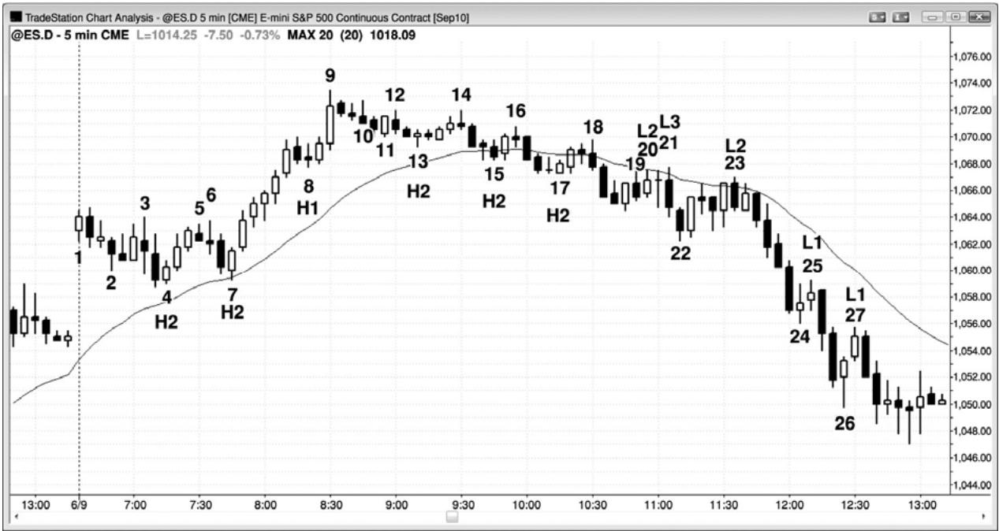
不要忽略了棒线计数的目的。把精力集中于回撤，而不是高点 1、高点 2、低点 1 和低点2。当市场处于多头趋势或交易区间中时，大部分时间里你都准备在两条腿回撤买进，比如图17.1 中棒 4、7、13 或 17 上方的高点 2，即使那样，你也不应机械地在每个高点 2 买进。举例说明，截止棒 15 的下跌有两条腿，第一条腿是截止棒 13 的下降通道。然而棒 15 是第四条连续的空头棒，一棒之前是一条强空头趋势棒。另外，第二条腿比第一条小得多，所以可能还要进一步下跌。当一个架构存在问题时，最好等待。
P149
为什么棒 10不是一个很好的高点 1做多架构呢？因为它出现在一条多头腿和一个最终旗形（棒8）的终点的更多条腿。当市场已经趋势上涨一段时间之后，每当出现一条相对较大的多头趋势棒时，它就可能代表着趋势的暂时耗尽。如果趋势可能被耗尽，那么它就不再是强多头趋势，所以高点 1 不再是一个很好的买进架构。这也是棒 11 为什么不是一个很好的买进架构的原因。由于市场仍然处于买进高潮之后的调整过程中，所以它是处于交易区间期内，在交易区间内的均线上方的高点 2 买进，是比较冒险的。
棒17是一个更好的高点2做多架构。它是一波复杂的两条腿调整的终点，其中每条腿都可细分为两条腿，较大的腿幅度相近，较小的腿幅度也相近，所以外观上看是不错的。另外，虽然根据后见之明，我们知道市场已经转变为空头趋势，但在这一点处，仍然有足够多的双向交易，所以认为它是一个交易区间，于是在高点 2 买进是仍是合理的。较大的第二条下跌腿开始于棒 14，结束于棒 17，该高点 2 可以有如下三种考虑方式：作为一个高点 4，作为两条较大的腿的一个高点 2，其中棒 13 是第一条腿的终点高点 1，或者作为两条较小腿的一个高点2，其中棒15是第一条腿的终点。
虽然高点和低点很常见，但是除了在很强的趋势中外，他们很少形成不错的架构。由于高点 1 通常形成于一条腿的顶部附近，所以仅当那条腿是位于一条多头腿的尖峰期内时，你才应该买进。棒 8 是一个很好的高点 1 的示例，因为它形成于强多头趋势中，那一轮多头趋势包含 6 条连续的多头趋势棒，每个多头实体与它前面的多头实体之间几乎不存在重叠。几乎所有多头尖峰中的高点和空头尖峰中的低点1回撤都是微型趋势线突破。
类似地，棒 25 和 27 是空头尖峰中很好的低点 1 做空架构。市场形成一轮很强的空头趋势，一个很强的空头尖峰，没有很强的卖出高潮，至少在棒 24 没有。有时，用另外一个名称来称呼某个架构，要比棒线计数架构更形象，棒 27 便是一个很好的例子。是的，它是强空头趋势中的一个低点 1，但有些交易者关心的可能是强多头反转棒棒 26。于是他们得出的结论是，空头趋势不再强劲，所以不能在低点 1 做空。不过，他们可能想知道市场是否正在开始进入交易区间，因为这是第二次尝试向上反转，于是他们可能怀疑棒 26 可能实际上是一个正处于萌芽期的交易区间的底部的一个高点 2，而棒 24 形成高点 1。他们仍然会在棒 27 低点 1下方做空，但并不是因为它是一个低点 1。相反地，他们会在它的下方做空，是因为他们把它看作空头趋势中一个失败的高点2，他们知道，在强反转棒棒26之后，高点2会把多头套住。
由于在棒 25 市场处于强空头趋势之中，所以你不能在前一棒的高点上方买进，你可能会在前一棒的高点上方做空，比如在棒24 的高点上方，你还可能在棒25下方卖出更多。
这张图表的更深入讨论
在一个开盘向上大幅跳空的交易日，图 17.1 中的棒 1 尝试成为一轮开盘起多头趋势的起点，但是在下一棒就宣告失败，而棒1就成为一个多头陷阱（把多头套入亏损交易）。由于那条空头反转棒超越棒 1 并向下反转，所以可以认为它是一个失败的高点 1。这使得棒 2 成为一个高点 2 做多架构，但是在那个多头陷阱之后，最后等待第二条下跌腿，至少是一个不错的多头实体出现，然后才可再次考虑做空。另外，截止棒 2 的下跌通道是一条微型通道，市场向上突破该通道后很可能出现回撤，所以在准备买进前最好等待那个回撤出现。不要担心这样不清晰的棒线计数；相反地，应该把注意力集中在寻找两条腿回撤以便买进的目标上。这里值得注意的关键点是，在很多交易日，当当天第二棒向上超越第一棒，然后向下反转时，那第二棒常常成为一个高点 2 买进架构中的高点 1，如果那个架构看起来不错，你应该准备在那个高点 2 买进。虽然棒 2 高点 2 引出一个可获利的刮头皮机会，但是如果棒 2 是一条多头反转棒，那么它将是一个更强的买进架构，尤其是当它的低点位于均线下方时。
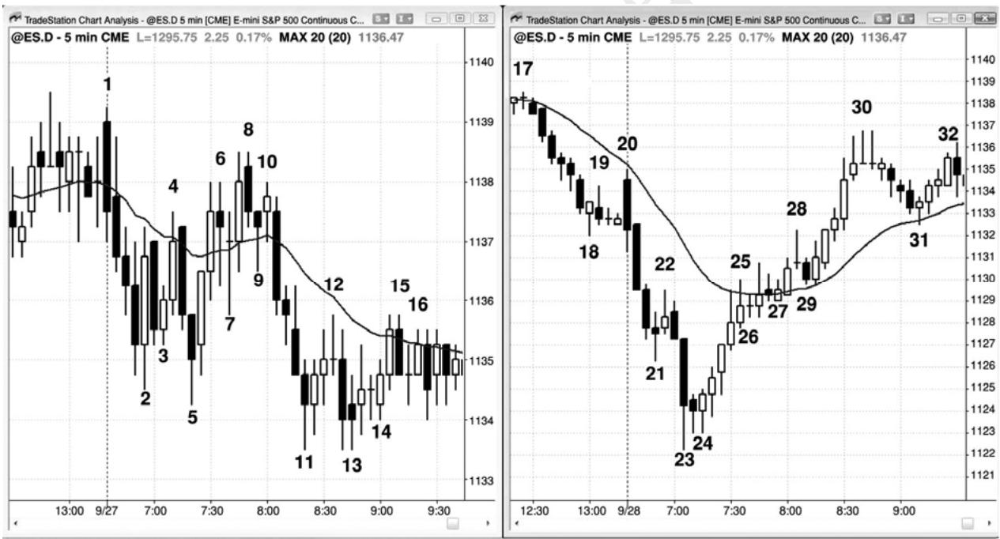
棒 20 是向均线的两条腿回撤（一棒之前的那条多头趋势棒是第一次上推），所以是一个合理的做空架构。然而，市场在一棒之后的棒 21 向上超越了入场棒和信号棒。那形成一个小型的第三次上推，把在失败的低点 2 买进的多头套入，把让自己在棒 20 空头信号棒高点上方被止损踢出的空头套出。这是一个楔形空头旗形的实例。每当市场跌至均线下方，交易者们就在寻找做空架构，当同时出现被套的空头和多头时，成功做空信号的几率上升。多头将被止损踢出，他们离场时的卖出将会帮助市场进一步下跌。刚刚被止损踢出的空头现在正处于恐慌状态，愿意追逐市场下跌，加剧了卖压。
EUR5minTY5minEURTYESP125book2/
Created with TradeStation
P150
在图 17.2 中，左侧图表中的高点 1 和低点 1 架构形成于交易区间内，不是很好的交易。右侧图表中的那些高点 1 和低点 1 架构形成于明确的空头和多头趋势中，是非常棒的架构。仅仅因为市场形成一个很强的多头尖峰和一个高点 1 买进架构，并不意味着你应该买进，永远不要在低点1做空，除非有一轮很强的空头趋势。
截止棒 7，市场已经五次反转，区间很小，大部分棒线都与先前的棒线重叠。当天处于交易区间内，明显不是在强多头趋势内。从棒 5 处的更低低点开始，两条多头趋势棒形成一个强上涨尖峰，它向上突破棒 4 更低高点。多方正希望当天向上突破，形成一轮多头趋势，如果不是市场存在惯性，多头趋势是可能形成的。趋势倾向于保护趋势运动，反转通常失败；交易区间倾向于横向运动，突破尝试通常失败。棒 7 是强多头尖峰之后的一个高点 1 买进架构，但是它出现在交易区间日内。它还拥有一条十字星信号棒，那代表着双向交易。这是一个很差的买进架构，实际上，激进型的交易者预期它会失败，使用限价单在棒 7 高点或其上方做空。
棒 9 是均线上方的一个高点 2 架构，由于是在交易区间内，所以很可能失败。
棒 11 是空头尖峰中的第四条空头趋势棒，该空头尖峰突破至当日一个新低。不过这是一个交易区间日。它可能变为一个趋势日，但现在还不是，所以当日低点处的低点 1 很可能失败，特别地，信号棒还是一个十字星。激进的多头会在棒 11 低点或其下方买进，预期空头被套。
把这些架构与右图中的那些架构做一下比较。市场开盘形成一轮趋势，包含三条大型空头趋势棒，只有短小的尾线，几乎没有重叠，大幅跌破昨日低点。这是一轮清晰、强劲的空头趋势，表现出强烈的紧迫感。棒 22 是一个单棒回撤，交易者们积极地在这个低点 1 做空架构下方做空。实际上，由于交易者们非常自信地认为市场会跌破尖峰低点，所以很多人会使用限价单在棒21高点及其上方做空。
又出现一波卖出高潮，市场跌至当日低点，之后通常是两条腿调整，有时是趋势反转。6条多头趋势棒形成一波向均线的反弹，那些棒线之间几乎没有重叠，都拥有很大的实体、短小的尾线。存在买进的紧迫感，在一轮可能形成的新多头趋势中，每个人都在等待这个强多头尖峰之后的回撤。棒 26 处出现一个单棒暂停，形成一个很好的高点 1 做多架构。
另一个六棒上涨尖峰至棒 30 结束，然后是一波六棒回撤，在棒 31 到达均线，在那里出现一条多头信号棒和另一个有效的高点 1 买进架构。
图 17.3 棒线计数有时很困难
P151
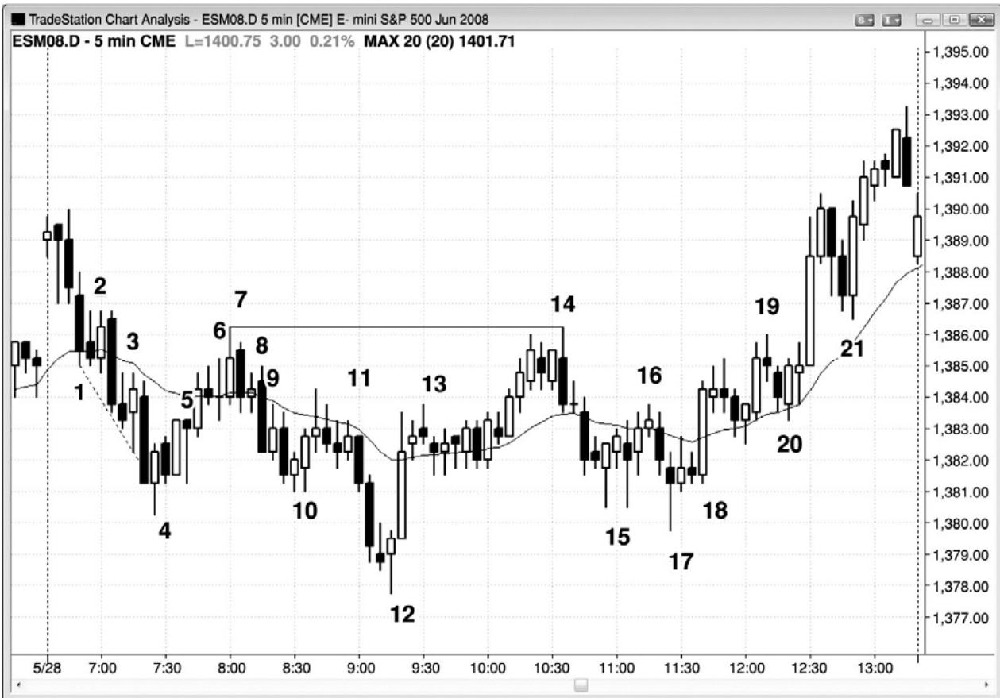
图 17.3 所示图表中，那个交易日是很难计数的（但相当容易交易），这张图显示出回撤腿数计算的很多细微之处。当第一条腿非常陡峭，它的调整只有几棒时（比如截止棒 2 的暂停），那么就形成高点 2 架构，再过一两棒之后（比如在棒 3），没有明显的趋势线被突破，所以你不应准备在高点 2 买进。很有可能这只是一轮空头趋势，而不是交易区间或多头趋势中的回撤，所以你应寻找高点 1 和高点 2。
尽管已经出现两次上涨尝试，但第一次尝试太弱。你问题希望在自己的买进架构之前能够看到一些看涨的力量。否则，就假定市场仍然处于它的第一条下跌腿中。如果棒 3 的后一棒能够向上超越棒 3 高点，那么它可能是一个激进的做多入场，但是，如果第一条下跌腿之后的反弹（高点1）显示出更多力量，那么买进总是会更好。
市场有时会再次下跌，在刺穿趋势通道线和向上反转前形成一个高点 3。这是一种楔形反转（三条腿和对趋势通道线的失败的突破），棒 4 处便形成一个这样的形态。注意，棒 2 和棒 3 都未能向上超越它们的前一棒，但它们都有效地令一条小型下跌腿结束。在 1 分钟图上，几乎可以肯定会出现一个清晰的腿形和小型调整性反弹，它们形成了这些 5 分钟多头趋势棒。
棒 4 是一条高点 3 做多入场棒，但它也是一条空头趋势棒。由于它只是上涨腿的第二棒，楔形底之后的反弹通常至少包含两条上涨腿，所以它不是一个很好的低点 1 做空架构。记住，当所有这些反转尝试出现在较大、较强的趋势线突破之后时，它们更为可靠。如果前一条腿没有突破有意义的趋势线（比如棒 2 反转尝试），那么下一条腿的反转尝试就不会多么确定（棒3），你应该等待附加的价格行为，比如棒4处的楔形底，然后再考虑买进。
棒 5 可以被看作一个低点 1 或低点 2，但是当市场从一个高潮底部（楔形是一种高潮）向上调整时，在准备再次做空前，确保允许市场横向至上涨调整。对于足够的调整并没有严格的规则，但是一般而言，调整应该包含两条清晰的腿形，而且棒线数至少为楔形的一半。抛盘也是一轮尖峰和通道空头趋势，所以上涨腿应该测试棒 2 处的通道起点。
严格来讲，棒 6 是一个低点 2，但是由于低点 1 处没有有意义的多头趋势线突破，所以你不应做空。市场依然处于紧凑通道内，所以你不应寻找低点 1 或低点 2 做空。随着通道的行进，可能出现多个回撤，但是在出现突破和反转前，通常至少包含三条腿。棒 7 是第三次上推。它是均线测试的一个二次入场做空架构，它与通道顶点棒 2 形成一个双重顶，而且它是一个双棒反转形态的和第一棒。在后面的空头棒下方做空是一笔合理的交易。不过，从棒6 开始，市场一直处于紧凑的交易区间内，所以大部分交易者不应交易；相反地，他们应该等待突破，然后开始寻找交易。
棒 8 是一个高点 1，但它出现在一波弱势反弹顶部的 6 条横向棒线之后，而不是在强多头尖峰之中。
棒 10 也是交易区间底部一条多头棒上方的一个高点 2 入场，是一个可接受的做多入场。
P152
由于棒 11 没有向上延伸超越前一棒，所以它是一个高点 1 变种，不过它也是均线下方的一个低点 2 做空架构。该低点 1 架构是一棒以前的两棒反转，那也形成一个失败的高点 2（棒10 是高点 2 入场棒）。市场二次尝试令棒 10 高点 2 做多架构失败，在棒 10 上方买进的大部分交易者将在这个二次失败离场。这便是为什么均线下方的低点 2 做空架构有效的原因之一。就在那个位置，很多不成熟的多头将会退出，当他们抛出自己的多头头寸时，增加了卖压，至少一两棒内他们不会再次买进。
棒 12 是一个安静的交易日内的一条多头反转棒和一个高点 2（棒 11 是高点 1），它是当日新低，使它成为一笔高胜率交易，至少可以刮头皮。如果没有高点 1，那么那一波下跌运动将拥有 6 条左右呈趋势变化的空头棒，交易者们在考虑做多之前，将不得不等待突破回撤（二次入场）。棒 12 是较大的两条腿回撤中的一波测量运动的（近似）终点，第一条腿结束于棒 10，棒 12 也是一波甚至更大的、从当日高点开始的测量运动的终点，第一条腿结束于棒 4。最后，棒 12 是空头趋势通道过冲之后的向上反转。空头趋势通道线并未画出，但它被锚定在棒 10 前一棒的低点，是从棒 7 开始的空头趋势线的一条平行线。
棒 13 可能是一段紧凑交易区间的起点，因为它是第三个连续的小型十字星。截止两棒以后，紧凑交易区间已经非常明显，所以大部分交易者不应再使用棒线计数来确定架构。不过，经验丰富的交易者们可以把棒 13 看作一次下推，把后面 4 棒中的两条空头棒看作另外两次下推；然后，他们可以把这段紧凑的交易区间看作一个楔形多头旗形（在第 18 章讨论），然后准备在突破买进，预期在强劲的棒 12 多头尖峰之后，将形成一条多头通道。由于在这一点处，市场基本上是在交易区间内运动，而这段紧凑的交易区间位于当日区间的中部，所以棒线计数并不可靠。不过，由于刚刚出现过一个很强的上涨尖峰，所以不管棒线计数如何，准备在多头趋势棒上方买进都是合理的。
棒 14 是一个低点 2，结束了第二条上涨腿，从棒 12 开始的上涨尖峰是第一条上涨腿。棒 14 还与棒 7 形成一个双重顶空头旗形，所以是冲向当日高点的第二次失败的尝试。在一个无趋势日和一个双重顶空头旗形之后，你应该寻找两条下跌腿。第一条腿结束于棒 15 高点 1，之后是两条小型上涨腿，以均线处的棒 16 低点 2 结束。
第二条下跌腿在棒 17 高点 2 结束，但棒 17 是一条空头趋势棒，前面也是一条空头趋势棒，而且前面截止棒 15 的第一条下跌腿非常强。它仍然是一个有效买进架构，但是不确定性导致在棒 18 高点 2 处产生一个二次入场。这个二次入场的形成，是因为有足够多的交易者对于第一个入场感觉不适，于是他们等待二次架构。如果只看实体，那么它还是一个 ii 形态的变种。在后面的章节中你将学到，它还是一个双重底回撤做多架构。棒 17 与棒 15 前一棒或后一棒形成一个双重底，棒 18 前面的横向棒是回撤。
棒19处的低点2是出现在很强的上行动能之后，但它仍然是一个有效的做空架构。不过在棒 20 处以一个五跳动失败而告终（将在后面讲解；意思是说从其 19 开始的下跌运动仅到达5个跳动，所以让很多空头仍然被套，没有获得一笔刮头皮交易的利润）。
棒 20 形成一个失败的低点 2，它是一个空头陷阱，所以是一个很好的入场，特别是此前的上行动能一直很强。当一个失败的低点 2 产生时，之后通常是低点 3 楔形或低点 4。它也是均线上方和交易区间内的一个高点 2，但市场正处于一轮尖峰和通道趋势的通道阶段，所以它是一个顺势买进架构，尽管它仍然位于交易区间的顶部下方。尖峰和通道趋势在第一本书中关于趋势的第21章中讨论。
由于从棒 20 开始的多头上涨尖峰非常强劲，很可能至少再形成两条上涨腿，所以在棒21 处的高点 1 买进是一笔可靠的交易。这条下跌腿有可能演变为一波两条腿回撤，有一棒的低点会低于棒 21 低点（形成一个高点 2 买进架构），但几率不大。市场中存在太多看涨的力量。
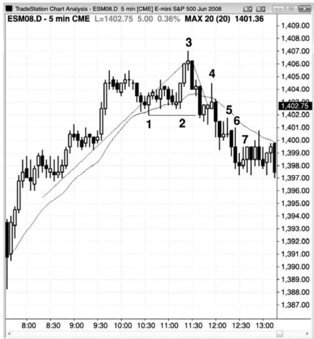
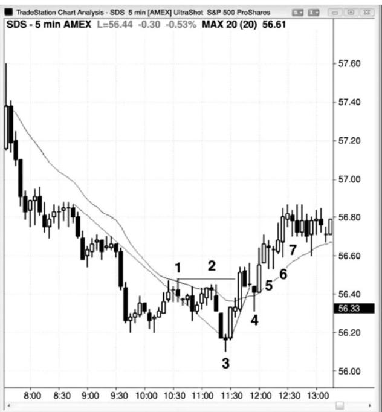
P153
在图 17.4 中，左侧是 5 分钟电子迷你，右侧是 5 分钟 SDS，SDS 是一只交易所交易基金（ETF），是 SPY（一只类似于电子迷你的 ETF）的倒数，但拥有两倍的杠杆。在电子迷你图表上，棒 5 处形成一个高点 2，此前棒 1 处形成一个多头趋势线突破，然后在棒 3 处形成一个更高高点，测试原来的趋势高点。这可能是一个趋势反转。下行动能强劲，棒 4 处的高点 1疲弱。市场向上刺穿从棒 3 高点开始的小型多头趋势线后立即向下反转，表明多方疲弱。有棒 5 处的高点 2 买进是不明智的，除非它显示出额外的力量，比如出现一条强多头反转信号棒，而不是像它前面那样的双棒空头尖峰。另外，信号棒太大，迫使交易者在疲弱市场的高位买进，信号棒是一条十字星棒，几乎完全在前两棒之内（前两棒都是空头趋势棒）。
当出现三条或更多棒线，大部分重叠，而且有一条或多条是十字星时，最好在交易前等待更多的价格行为。多空双方势均力敌，任意突破都很可能失败（比如棒 5 处的高点 2 买进信号），一定不要在向上突破它的高点时买进，尤其是在空头腿中，特别地，因为大部分交易区间都是顺势的，前一棒腿是下跌腿。
每当你想知道一个信号是否足够强时，从不同的角度分析图表会有所帮助，比如使用棒线图或倒数图。一来来说，只要你认为自己需要进一步分析，那么这就表明那不是一个清晰而强劲的信号，所以你不应选择那笔交易。
虽然你可能禁不住诱惑在电子迷你图表上的高点 2 买进，但实际上没有人会准备在右侧
SDS 图表上棒 5 处的低点 2 卖出，因为上行动能实在很强。由于这些图表彼此是倒数关系，所以如果你不会在SDS上买进，那么就不应在电子迷你上卖出。
注意电子迷你上的棒 7 是一个高点 4，那通常是一种可靠的买进信号。然而，在高点 1、2 或 3 缺乏看涨力量的情况下，你不应选择那笔交易。仅棒线计数本身并不足以成为交易的依据。你需要市场首先展示出自己的力量，表现为相对较强的运动，至少突破一条微型趋势线。 在这个例子中，高点 4 是由一个下跌尖峰和一条楔形通道形成的（棒 4、5 和 7 分别是三次下推的终点）。
注意之前有一轮很强的多头趋势，在市场突破多头趋势线之前，低点 2 做空是糟糕的交易。没有很强的下行动能，但市场已经横盘整理了约10棒，表明空方有足够的能力在较长时间内牵制住多方。这种空方力量的展示，对于交易者感觉自信地在向当日新高棒 3 的最终旗形突破做空是非常必要的。
棒 4 是电子迷你图表上一个可以接受的微型趋势线做空架构，尽管当天一直处于多头趋势。在最终旗形向棒 3 处的更高高点突破后，你需要考虑趋势可能已经向下反转。在这种反转之后，应该至少形成两条空头腿——多空双方都在预期这一点。另外，入场点在均线上方，
一旦市场看起来进入空头趋势，而且下行动能充足，那么你就要考虑在高点 1、2、3 和4 做空，将限价单设在前一棒高点或其上方几个跳动处。棒 4、5 和 6 是那些做空架构的入场棒，它们也是在它们的低点下方1个跳动处卖出更多的信号棒。
图 17.5 失败的低点 2 最终常常成为一个低点 4 做空架构
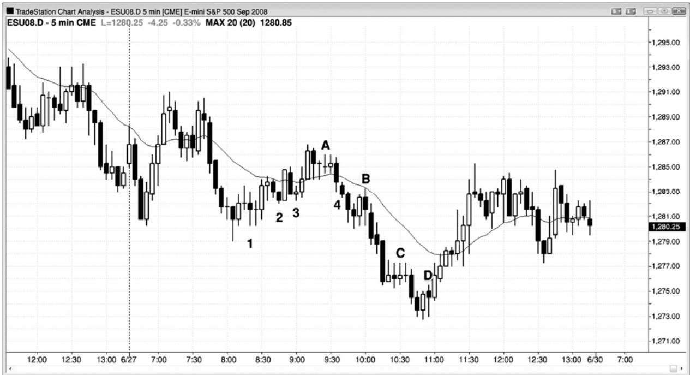
P154
在图17.5中，棒2是一个失败的低点2，所以预期再形成一两条上涨腿。虽然对棒2的向上突破不强，但是上升通道非常紧凑，所以不能在低点 3 做空。一个低点 4 结束了空头反弹，另一个结束了向当日低点的下跌。棒 A 高点 1 出现在前一条腿的低点 4 之前，但这并没有关系。
棒 1 是一个微型趋势线低点 1 做空架构，是一个很好的刮头皮机会。但是，太平洋标准时间上午 8:00 的小十字星和那个低点 1 做空架构的十字星信号棒，意味着市场可能正在进入一段紧凑的交易区间。这使得那笔交易的风险很高，或许最好不要选择那笔交易。
棒 B 是一个很好的低点 1 做空架构的例子，市场在强势运动穿越均线后，在向均线的回撤中形成低点1。它也是一个微型趋势线失败突破做空架构。
图 17.6 失败的低点 4
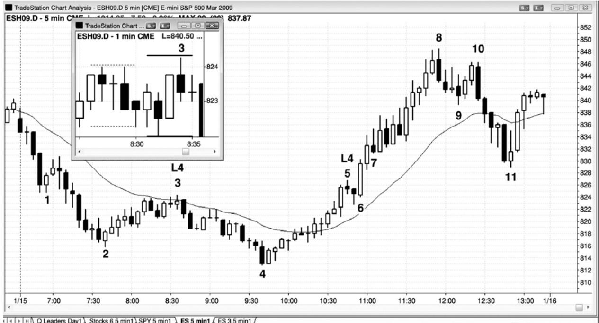
通过观察图 17.6 中的两个失败的低点 4 做空架构，我们可以得出重要的结论。在棒 3 处触发做空入场的低点 4，在形成时包含一条小十字星棒。当这种情况发生时，总要把止损设在信号棒高点上方两三个跳动处，因为市场常常快速上涨超越信号棒一个跳动，在你刚刚入场做空后猎杀止损，比如在这张图中。观察一下插入的 1 分钟图。5 分钟信号棒由虚线之间的 5 条 1 分钟棒构成，入场棒由实线之间的 5 条棒线构成。你可以看到，市场在入场棒的第二分钟触发了空头交易，但是在第四分钟超越信号棒 1 个跳动，然后才下跌，进入棒 4。
第二个低点 4 由棒 5 架构触发。截止棒 4 的上涨几乎全是多头趋势棒，棒 4 是一个更低低点，是在突破一条重要空头趋势线后形成的。趋势已经转变为多头趋势，你不应该再寻找空头反弹，也不应该再寻找低点 1、2、3 或 4 做空，那些都是交易区间和空头趋势中的架构。在从棒 4 开始的上涨运动中，空头力量（比如突破多头趋势线）缺乏，所以更不应该准备做空。实际上，不便不应寻找反转做空，你应该寻找回撤买进，甚至可以将限价单设在棒 5 低点或其下方买进。看一下当低点 4 在入场后的一棒失败时发生了什么。不出所料，每个人都接受了这是多头市场的事实，市场一路猛涨至棒 8，大约形成一波测量运动，其幅度为棒 4至棒 5 整个低点 4 形态的高度。突破在突破点的高点（棒 5 高点）和突破回撤（棒 7）之间形成一个测量缺口。这种类型的测量缺口在第 6 章关于缺口的部分讨论过。
P155
注意棒 7 是三次尝试令市场向下回转的第一次，所以它是从另外任意反弹回撤的一个磁力位。它是失败的低点4上方的双棒突破尖峰之后的多头通道的起点。截止棒11的两条腿下跌（跟在多头趋势线突破和棒 10 更低高点之后）击中所有三条早期空头反转棒的低点下方，这是比较常见的情况。面对如此强劲的反弹，很难相信市场会向下回转至那些价位，但是，如果你知道怎样阅读价格行为，那么如果市场不向下回转，你将感到更加吃惊，特别是形成这样的高潮上涨运动时。棒 7 之后是一段紧凑的交易区间，但这是在强多头市场中。虽然那段紧凑的交易区间使得棒线计数不太可靠，但是由于当前是强多头市场，所以交易者们应该准备在多头棒上方买进，同时把保护性止损设在信号棒的低点下方。
顺势提一句，棒 7 和后面四棒中的两条空头反转棒，构成三次下推。当由两条多头趋势棒构成的突破宣告下推失败时，在那个楔形上方形成另一个测量缺口，引出一波向上的测量运动，当日高点超越那波测量运动目标几个跳动（失败的楔形常常引出测量运动）。
在棒 8 之后几棒，形成一个高点 1 买进架构，虽然它是在强多头尖峰和多头趋势中，但是由于是在一个买进高潮之后，所以不是一个好的买进架构。在棒 6 的双棒多头尖峰之后，市场处于抛物线形的多头通道内。
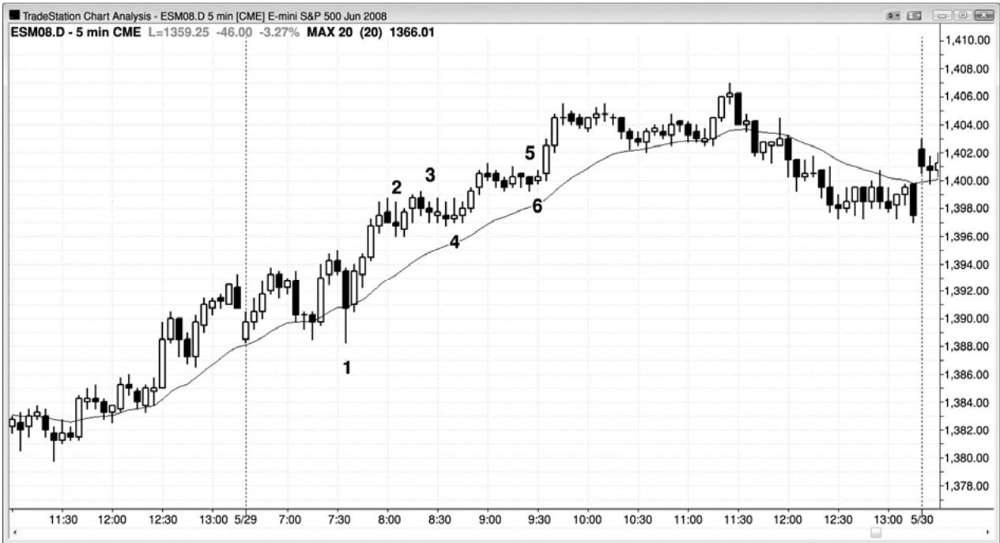
如果之前缺少强趋势线突破，那么低点 2 架构并不足以成为逆势交易的理由。实际上，它几乎总是失败，转变为很棒的顺势入场，比如高点 2 买进架构，如图 17.7 中的棒 4 和 6。低点 2 是交易区间或空头市场中的架构，决不是多头趋势中的架构，这是一轮多头趋势，所以交易者们不应寻找低点 2 架构。在强多头趋势中做空前，你首先需要看到空方表现出他们已经愿意积极做空的意愿。你准备在他们二次尝试推动市场下跌时做空，而不是第一次，因为第一次通常失败。当多头趋势非常强时，你甚至可以考虑在前一棒的低点下方买进，预期任何低点 1 或低点 2 都失败。举例说明，你可以设定限价单在棒 2 之前形成的反转棒下方买进，或者你可以在棒 5 当它跌破前一棒低点时买进，预期低点 2 失败。一般而言，使用止损单在前一棒的高点上方买进要更安全；但是当多头趋势强劲时，你几乎可以在任意时间以任意理由买进，在前一棒低点下方买进也是合理的，因为你肯定预期大部分反转尝试失败。
截止棒 4，市场处于一段紧凑的交易区间内，所以棒线计数变得混乱。此时你应该忽略棒线计数，由于多头趋势如此强劲，所以只要准备使用止损单在任意多头棒上方买进就可以了，比如在棒 4 后一棒的上方。
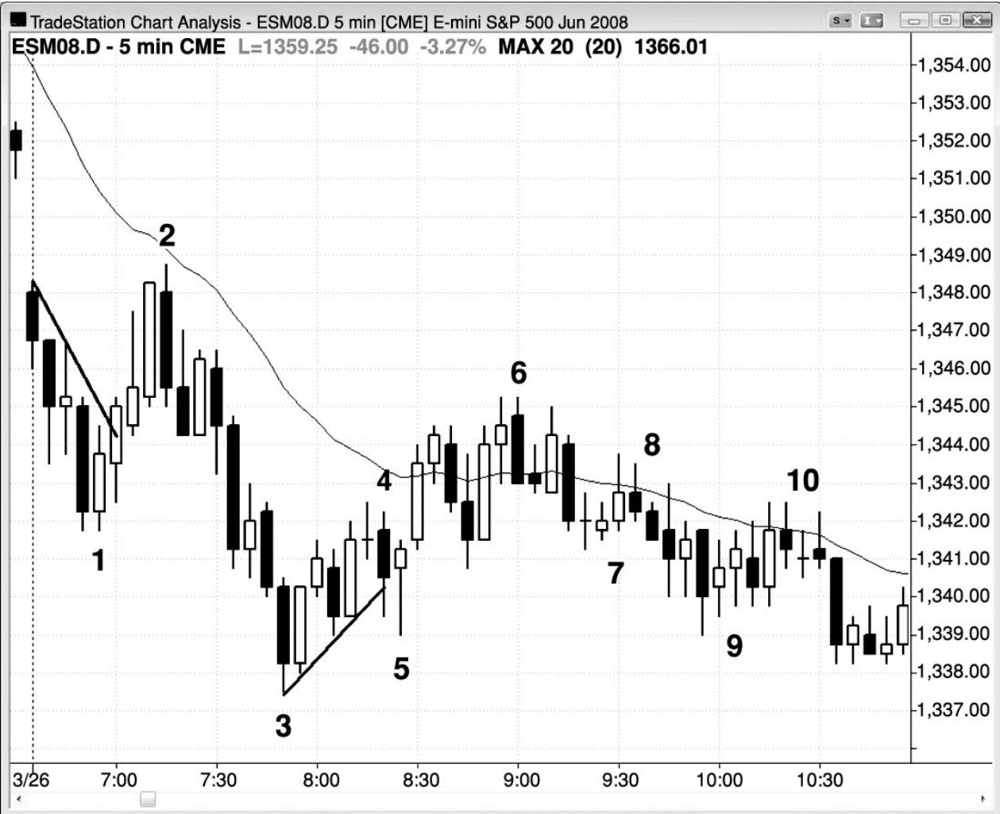
P156
如图 17.8 所示，今天市场向下跳空突破，然后在棒 2 突破回撤至一个双重顶，略低于均线，之后又创出一个新低。此时，交易者们不知道截止棒 3 的两条腿下跌是一波运动的结束，还是将引出更多的运动（第一条腿是从昨天收盘价下跌至棒 1）。棒 4 低点 2 做空架构到达了刮头皮交易的利润目标，所以从技术上看没有失败，但对趋势线的向下突破和向上反转，使得市场的表现很可能像是一个失败的低点 2；市场至少会再形成两条上涨腿，然后尝试形成一个低点 4 做空架构。
棒 4 处的低点 2 做空架构存在几个问题。首先，它出现在趋势线突破之后（截止棒 2 的反弹），那就意味着棒 3 可能是当日低点（一个不适合做空的位置），因为当日高点或低点差不多都是在第一个小时内形成。其次，该低点 2 距离均线太远，所以不是一次很好的均线测试。通常，对均线的二次测试将比第一次更接近均线，或者刺穿均线，而棒 2 处的第一次测试明显离均线更近。很多交易者会对顺势入场感觉不适，除非回撤触及均线，或者距均线只有一两个跳动。当反转在此之前开始时，市场将失去那些空头们可能提供的燃料。
棒 6 形成一个低点 4 架构，是第二次上推超越均线。但是，这一波反弹包含很多重叠的棒线和若干十字星，表明多方和空方势均力敌，不大可能出现快速的大幅下跌。因此，对于喜欢高胜率、大获利潜能交易的交易者们来说，在这一点交易可能是不值得的。那么该怎么办呢？要么等待更多的价格行为，如果你保持耐心，好的架构总会出现，要么做空，但准备好在交易过程中出现回撤，比如入场之后的那一棒。
棒 9 是第五条连续的重叠棒，在这一点处，市场处于紧凑的交易区间内。紧凑交易区间内的棒线计数非常不确定，大部分交易者不应把棒线计数作为交易依据，直到突破产生。
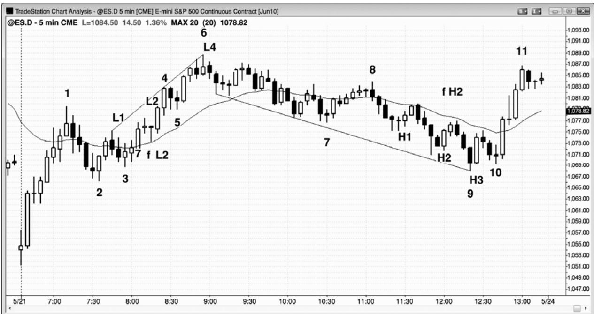
P157
失败的低点 2 可能引出一个楔形顶（低点 3）或一个低点 4 顶，取决于失败的低点 2 之后的上行动能。有时，它可能只是转变为一轮多头趋势。图 17.9 中，两条大实体、短尾线的多头趋势棒向上突破失败的低点 2，从棒 3 开始的上涨运动处于一条紧凑的通道内。它也是从开盘上涨至棒 1 的非常强劲的尖峰之后的一条通道。另外，那个低点 2 在一棒之后就向上反转。这样强劲的多头动能使得在棒 5 ii 形态下方做空太过冒险。预期这个低点 2 失败是合理的，因为它处于一条多头通道的早期阶段，通道常常形成回撤，把交易者们套入错误的方向。截止这一点，多方的力量一直很强，通过通道的紧凑性、多头趋势棒的数量、以及相邻棒线没有大的重叠便能看出。这些都是一条强健的多头通道的征兆，因此应该预期低点 2 失败。
尽管市场没有跌破棒 5 形成低点 3，但仍然形成从棒 2 开始的第三次上推，所以它的目的同低点 3 相同。由于突破动能强劲，所以应该预期再形成两条上涨腿。棒 6 前一棒向上略微刺穿趋势通道线，收盘成空头趋势棒，棒 6 再次测试那条趋势通道线。这是一个合理的低点 4 做空架构，预期至少形成两条下跌腿。
当天晚些时候，一个高点 2失败，但是在一个高点 3（楔形），而不是高点4之后向上反转。从高点 1 和高点 2 开始的每一波上涨运动都持续了若干棒，多方显示出一些力量。虽然对失败的高点 2 的向下突破很强，但那是一个耗尽型的卖出高潮。空头尖峰中棒线实体长度的增加，是耗尽的征兆，它出现在趋势通道线处，位于棒 2 低点区域。由于棒 2 是一条多头通道的起点，所以应该预期它是一个将被测试的磁力位，在这张图中果然得到了测试。完成测试之后，市场通常会反弹，反弹幅度约为正在形成中的交易区间的高度的 25%。由于下跌至棒 9 的三棒空头尖峰代表着很强的看跌动能，所以可能至少再形成一条下跌腿。由于那一波卖出高潮，几率偏向于形成至少包含两条腿的横向至上涨（调整）。这使得在棒 10 更高低点买进成为一笔胜率很高的交易，特别是在市场测试多头通道底部棒 2 之后，几率偏向于形成交易区间。
这张图表的更深入讨论
如图 17.9 所示，今天市场以一个失败的突破开盘，在向下跳空突破后向上反转。市场形成一个强劲的多头趋势棒尖峰，然后是一条紧凑的上升通道，至棒 1 结束；整波运动很可能是更高时间框架图表上的一个多头尖峰。当动能这般强劲时，几率偏向于在回撤后至少形成第二条上涨腿，于是，一旦市场回撤至多头通道起点棒 2 区域，就可以合理地寻找买进架构。
这也是一轮开盘起多头趋势，棒 2 是第一个回撤做多的架构。棒 3 是一个突破回撤买进架构，此前市场突破了从棒 1 到棒 2 的多头旗形。
交易者们把从棒 6 开始的整条下跌腿看作是多头趋势中的一波回撤。高点 2 如此接近那个底部，但交易者们并不确信。不管怎样，他们正准备买进。还要注意，从棒 6 高点开始的每个新低都很快反转。交易者们正在那些新低买进，所以在整个下跌过程中，买家是非常积极的。虽然失败的高点 2 之后的下跌运动很强，但它包含三条实体越来越长的空头棒，所以是一个小型卖出高潮。有的交易者可能会在棒 9 上方买进，假定棒 9 低点将会保持（楔形低点），但最好等待回撤，回撤入场在棒 10 更高低点形成。这引起一波很强的反弹进入收盘，开盘处的多头恢复买进。
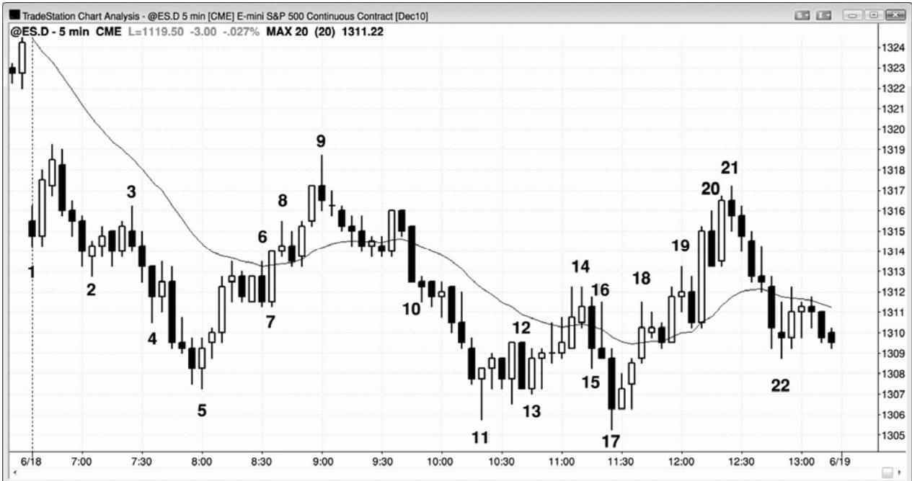
在图 17.10 中，棒 16 十字星有一条很长的上尾线，表明市场在那一棒内先上涨，然后下跌。那波上涨运动是第一条下跌腿的结束，所以棒 17 实际上就像一个高点 2，果真如此。
棒 12 是均线下方的一个低点 2 做空架构，但市场正开始形成一个交易区间，所以这不是一个可靠的架构。实际上，在棒 12 低点买进更为合理，但只有老手才应尝试那样操作。每当在略低于均线处出现一个卖出信号，信号棒很长，几乎与两棒或更多棒全部重叠时，市场就是处于一个小型交易区间内，所以在底部做空通常是一种失败的策略。
这张图表的更深入讨论
图 17.10 中，市场开盘大幅向下跳空，所以是一个空头突破。虽然棒 1 是一条空头趋势棒，但它仍然是开盘起多头趋势的第一棒，不过如果它是一条多头趋势棒，那么就更低是多头趋势的第一棒了。交易者们在棒 1 高点上方买进，预期突破失败，市场向上反弹。反弹仅进行了两棒，然后空方在第二条多头棒下方和双棒反转（那条空头入场棒的低点）下方做空，预期形成突破回撤做空架构和开盘起空头趋势。一个大型的下跌缺口已经增加了成为空头趋势日的几率，交易者们应该努力选择所有合理的做空架构，预期出现下跌波段。
棒 4 是当天第三次下推，但它是一个空头尖峰的第三棒，所以不是一条可靠的做多信号棒。在做多之前，交易者们应该等待突破，然后回撤。下一棒是一条多头趋势棒，向上超越棒 4，形成一个双棒反转，但市场没有超越这两棒的顶部；相反地，市场向下突破。棒 2 前面的三条空头棒拥有足够的动能，所以很多交易者会重新计数，把棒2看作第一次下推。
当棒4形成时，有些交易者把它看作第三次下推，而有些交易者只把它看作第二次下推，没有人知道哪一组是正确的。当心存疑虑时，继续观望，等待二次信号。
棒 5 是一条多头反转棒，是双棒反转形态的第二棒；它也是开始于棒 2 空头尖峰的通道内的第三次下推。尖峰常常是第一次下推，比如在这里。在这一点，尖峰和通道型多头买进，预期出现两次上推，楔形交易者从棒 2 尖峰开始重新计数，也在这个第三次下推买进。怀疑棒 4 是否是第三推的交易者们，正在寻找突破回撤，把棒 5 看作一个更低低点突破回撤。在这一点，所有交易者都认为所有这些因素在起作用，所以很可能形成两条腿上涨。
棒 5 之后，市场形成一个四棒多头尖峰，上涨至均线，这可能是第一条上涨腿的终点。
棒 6 是一个低点 2 做空架构，但是由于很可能形成第二条上涨腿，所以最好不要做空头刮头皮，而是寻找一个更低高点做多架构，或者对这个多头旗形的突破。棒 6 和它前面倒数第二棒都是空头棒，形成两条小型下跌腿；所以它们在棒 6 高点上方形成一个高点 2 买进架构。
棒 8 是一个小型十字星，但它可能是一个最终旗形做空架构，预期对结束于棒 6 的那个四棒多头旗形的突破失败。然而，从棒 5 到棒 8 的上涨运动是在一条相当紧凑的多头通道内，所以棒 8 是否是第二条上涨腿，尚不明确。当心存疑虑时，等待二次信号。棒 8 的后一棒是一条空头趋势棒，对于做空的空头来说，它是一条很好的入场棒，但是他们将在那条空头趋势棒上方买回他们的空头头寸。许多交易者会在棒 6 上方做多，因为那里有被套的空头，这现在也是一个失败的低点2，其中棒6是第一次下推。
棒 9 是一条空头反转棒，一条二次信号均线缺口棒，其中棒 8 是第一个架构，棒 9 也是空头楔形的顶部。从棒 5 开始的上涨尖峰的顶部是第一次上推，棒 8 是第二次上推。楔形反转通常至少引出两条下跌腿，比如在这里。第一条下跌腿结束于棒 11，第二条下跌腿结束于棒17。正在寻找从棒5处的楔形底开始的两条腿上涨的多头，对于把从棒5开始的上涨尖峰作为第一条上涨腿，从棒 6 底部开始的上升通道作为第二条上涨腿，感到满意。
棒 10 后面的三棒试图与多头通道的底部棒 7 形成一个双重底，但失败了。
P159
棒 10 是一个空头尖峰，接下来是一条高潮通道，下跌至棒 11。
棒 11 是一条十字星棒，但它的前面是从棒 9 开始的迅猛下跌，由于空头动能，市场在向上反转前很可能要先进行横盘整理。
棒 12 是一个低点 2 做空架构，但它是一条大型信号棒，而且与先前三棒有着大量重叠；所以这很可能是一个空头陷阱，不是一个好的做空架构。失败的低点 2 引出一个六棒多头尖峰，直到棒14，但相邻棒线之间存在大量重叠，而且上涨运动是在一条非常紧凑的通道内。虽然那条通道是向上倾斜的，但是它的紧凑性表明市场在向下突破后很可能不会出现大幅下跌，而且市场会向上回撤并进入通道区域。所以这可能是一个最终旗形，那将引出一个多头反转。
市场尖峰下跌至棒 17，棒 17 是一条大型空头趋势棒，所以是一个卖出高潮。
后面的多头内包棒是一个很好的架构，根据最终旗形反转、当天第三次下推（这与棒 5和棒 11 形成一个大型的楔形多头旗形），以及第二个更低低点从对开盘低点棒 5 的向下突破尝试向上反转，预期至少形成两条腿上涨。
棒17也是一个收缩台阶，因为它跌破棒11两个跳动，棒11跌破棒5六个跳动。这是空头趋势正在失去动能的征兆。
棒 19 是一个低点 2 架构，但是上行动能太强、信号棒太弱，所以不能做空。入场棒是一条强空头趋势棒，但市场立即向上反转。机警的交易者们预料到该低点 2 会失败，于是他们在这条空头入场棒上方做多。
棒 20 是从棒 17 低点开始的第三次上推，是一条强空头趋势棒，但做空架构一直没有形成。市场又一次上推至棒 21，有些交易者把那个向下反转看作低点 4，而有些交易者把它看作一个楔形顶，棒 18 是第一次上推，棒 19 是第二次上推。还有交易者把它看作一个大型的低点 2，棒 14 是第一次上推。
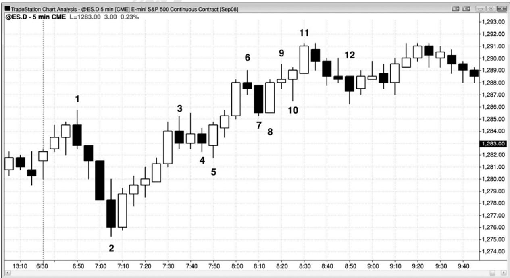
在图 17.11 中，棒 3 和棒 4 形成多头波段中的一个两条腿调整，不过棒 3 后一棒是那条上涨腿的终点。因为它是一个两条腿调整，所以棒 4 是一条高点 2 做多信号棒。
棒 7 是一条空头趋势棒，所以它不是一条可靠的高点 1 信号棒，但棒 8 与它形成一个双棒反转形态，如果你在棒 8 多头趋势棒上方买进，要比你在棒 7 空头趋势棒上方买进，获得更高的成功率。虽然有些交易者把棒 7 看作棒 3 第一条上涨腿之后的一个低点 2 入场，但上涨运动很强，所以这可能是一轮多头趋势；因此，低点 2 做空是一笔低胜率交易。
棒 8 是一个失败的低点 2 买进架构和一个高点 1 做多架构。
有些交易者可能会在棒 9 下方做空，但那条多头通道非常陡峭，而且信号棒太弱，所以不能在此做空。
棒 10 是一个高点 2 做多架构（棒 8 是高点 1），因为在它之前市场在当日高点两次尝试下跌（棒 7 和棒 10）。（译注：那么棒 11 是高点 2 才对呀！）连续两次尝试下跌与两条腿调整是相同的，所以它是一个高点 2 做多架构。它还是一个失败的低点 2 买进架构，很可能有被套的空头在棒 10 上方买回他们的空头头寸。另外，在棒 8 入场的一些空头，可能允许一次上推，但在第二次上推时，几乎都会买回他们的空头头寸。那是高点 2 买进架构在多头趋势中如此可靠的原因之一。
有些交易者把棒12看作一个高点1 买进架构，而有些交易者把它看作一个高点2买进架构，把它前面的十字星棒看作第一次小型下推的终点。由于截止棒11的上涨运动是在一条楔形通道内，所以很可能形成一波两条腿的横向至下跌调整，所以在这里买进不是一笔高胜率交易。棒12（向下）突破多头趋势线，之后可能形成一个更低高点或一个更高高点；无论哪种情况，空方都很可能准备在反弹时做空，预期至少形成一波刮头皮下跌。
P160
所有这些分析都是不严格的，但这些分析的目标是重要的。交易者们需要寻找两条腿回撤，因为它们会形成极好的顺势入场。另外，不要在多头趋势中寻找低点 2 做空架构。
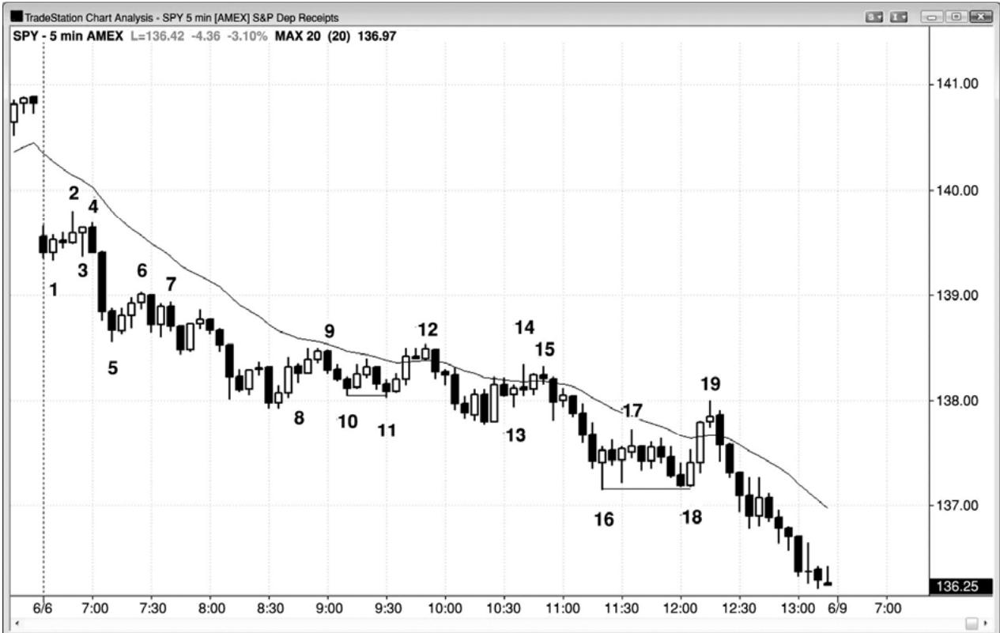
在图 17.12 中，SPY 的图表展示了很多低点 2 架构的变种，但是如果你仔细考虑每一个架构，那么你会发现，每个都是一波两条腿调整的逻辑终点。由于图表是明显看跌的（位于正在下降的指数均线下方），所以交易者们正在寻找做空入场机会，所以与低点2近似的任意形态都是足够好的架构。
棒 3 是一个低点 1，它的高点被棒 4 突破，使得棒 4 成为第二次上涨尝试和一个低点 2做空架构，该架构在下一棒触发。
棒 6 是一个低点 2 架构，一棒以后出现一条多头趋势棒，表明是一条上涨腿。棒 7 是在下一棒做空的信号棒，尽管它是一个比低点 1 更低的入场。它仍是一个两条腿调整。
棒 8 是向上调整中的一条小型空头内包棒，所以它构成一个微型调整，令第一条上涨腿结束。棒 9 出现在另一条多头趋势棒（实际上是两条）之后，所以它是第二次下跌尝试，实际上是均线附近的一个低点 2 做空架构。
棒 11 低于棒 10，所以它是截止棒 12 的上涨运动的起点。为什么棒 12 顶部的后一棒是一个低点 2 呢？多头外包棒棒 12 的低点在棒 12 刚刚开盘后就跌破前一棒低点，虽然在这些张图上看不出来，但是在 1分钟图（未给出）上肯定非常清楚。这使得棒12成为一个低点1。外包棒在上下两条方向上都突破了它的前一棒；你不知道是首先突破的哪个方向，不过它的实体的方向通常是可靠的（举例说明，多头实体通常表明向下突破先于向上突破，因为收盘前市场的向上是向上的）。棒 12 的后一棒向下突破棒 12，所以是从棒 11 以来第二次出现一条棒线向下突破前一棒低点，所以是均线处的一个低点 2 做空架构。因为棒 9 是第一波上涨运动，棒12是第二波上涨运动，所以棒12也是一个低点2做空架构。
棒 13 是一条低点 1 做空入场棒（和一个低点 2，其中两棒之前的那条空头棒是低点 1），但是在两条强多头趋势棒之后，选择做空太过冒险，因为很可能再出现一波向上的调整。
一旦第二条上涨腿形成（棒 14 有一个更高高点，所以明显是一个小型的第二条腿），只要棒线低点低于前一棒，那么它就是一个低点 2 做空架构。棒 15 转变为一条低点 2 做空信号棒，尽管它是一个小型波段高点，位于两条上涨腿的高点下方（它是一个更低高点，应该预期至少形成两条下跌腿）。另外，正如在下一章将要讨论的，棒 15 也是一个楔形空头旗形入场，根据是三次上推，其中棒 14 是第三次上推，棒 13 前面的两条多头趋势棒是头两次上推。
棒 17 是一个低点 2 架构，但是它前面是两条尾线很长的多头反转棒，所以交易者们正开始在这一区域买进。这使得此处做空风险很高，棒线下方的买家数量很可能多于卖家。你越肯定市场是处于紧凑的交易区间内，你对自己的棒线计数就越不肯定。一般而言，在紧凑的交易区间内不要根据棒线计数交易，除非你对自己的计数非常自信，也就是说你认为计数的明确程度足以保证交易。
P161
棒 18 与棒 16 形成一个双重底，棒 18 也是一个高点 2，根据是从棒 17 开始的两次小型下推。
这张图表的更深入讨论
如图 17.12 所示，当天开盘市场大幅向下跳空，所以是一个空头突破。第一棒是一条空头趋势棒，可能是当日高点；因此，它是一个可以接受的做空架构。然而，市场在下一棒向上反转，进入一个失败突破做多架构，当天可能形成一轮开盘起多头趋势。大型下跌缺口仍然偏向空方，除非多方以一个强多头尖峰和坚持到底明显地控制市场。
一旦市场跌破棒 2，接着就在当天第一棒之后形成一个下跌尖峰和一个上涨尖峰，当天的区间小于过期日平均区间的三分之一。这使得开盘区间进入突破状态，当天可能形成一个趋势日，交易者们在当日高点上方设定买进止损单做多，预期向上突破，在棒 1 低点尖峰（译注：作者在此加一尖峰，不知何意）下方设定卖出止损单做空，预期向下突破。向下突破棒1 的大型空头趋势棒，表明交易者们非常积极地做空。那次下跌或许要归功于太平洋标准时间上午 7:00 的报告。不过，更有可能是机构已经计划在今天做空，很有可能是大型客户听到看跌报告后，争相给他们打电话，于是他们突然决定现在卖出。机构已经准备做空，但他们希望在报告时出现一波反弹，于是他们能够在较高的价位做空。报告告诉他们不会出现他们所期望的反弹，于是他们不得不在报告后做空，他们在一天中持续做空。
棒18是一轮空头趋势的终点，向上突破一段紧凑的交易区间，由于紧凑交易区间的磁性拉力，很可能向上反转，（？）常常成为最终旗形。
棒 19 是空头趋势中的第一条均线缺口棒，所以是一个很好的做空架构。它是空头陷阱的一个很好示例，空头陷阱常常出现在空头趋势日的最后一两个小时。它位于一个强多头尖峰的顶部，该多头尖峰向上突破棒 17 波段高点，把多头套入，空头套出。所有多头尖峰都是高潮和突破，它们有时失败，引起向下反转，而不是向上反转。当那个尖峰正在形成时，害怕自己会错过一个重要反转的、情绪化的交易者们，会在第二条多头趋势棒形成时，当它向上突破棒 17 更低高点时，以及那一棒在高点收盘时买进。强势空头只是在一旁坐观那些多头的操作。这些空头知道，在当天交易结束之前，很可能会出现一个尝试性的多头反转，他们等待一条强多头趋势棒形成。一旦他们看到一条强多头趋势棒，他们就认为市场不会在那里停留很长时间，于是他们积极做空。由于他们和多头都知道当天是空方在控制市场，所以那些空头相信自己能够再次驱动市场下跌至当天一个新的低点。多头逐步退出他们的多头头寸，因为他们认为那次向上反转缺乏强多头反转的成分。先前没有对空头趋势线的突破，而且当天市场一直没有能够在均线上方停留。
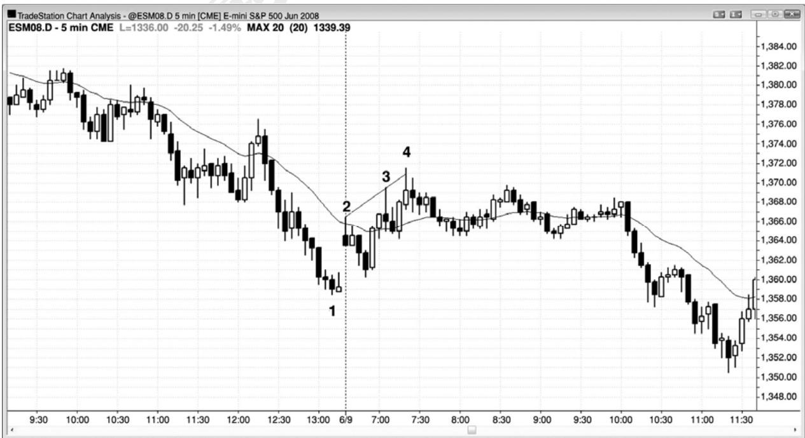
当出现一波尖峰和通道回撤时，可以把尖峰看作第一条上涨腿，把通道看作第二条上涨腿。图 17.13 中，截止棒 2 的开盘上涨缺口是尖峰，是三个上推中的第一个。多头通道在调整前常常还会形成两次上推，整个形态在这图中形成一个楔形顶。大部分形态都拥有多重解释，有些交易者根据一种解释来交易，而有些交易者根据另一种解释来交易。有些交易者把截止棒 4 的上涨运动看作一个楔形顶，而有些交易者把它看作一波两条腿调整，其中截止棒2 的上涨尖峰是第一条腿，截止棒 4 的两条腿通道是第二条腿。